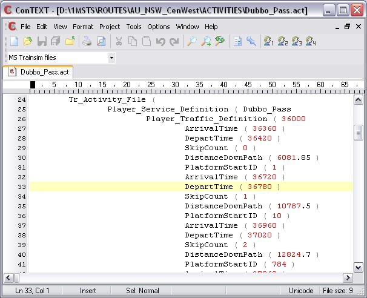
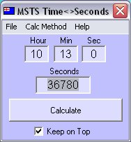

The problem with the technique described above is that you can only input a departure time later than the one already present in the timetable. The AE will not permit you to enter a departure time earlier than the one already present.
You can enter an earlier departure time by manually editing the .ACT file (see below), but Laurie Dickerson has described another method to be able to enter the departure times of your choice.
Sheesh, Do You Mean I Have To Open AE Just To Change Times?
No, actually you don't. You can edit the .ACT directly in a unicode-aware editor such as ConTEXT. MSTS sets the arrival and departure times in seconds past midnight, thus,

So it's a simple matter to insert your own arrival and departure times in the appropriate positions in the ACT file.
To make this process even easier, Gary O'Connor has written a tiny EXE file that quickly converts time of day to seconds or vice versa:

For example, using the activity in this tutorial, you might want to change the departure time at Cullya.
Type 10:13 into MSTS_TimeCalc and it instantly returns 36780, enabling you to find that time in the .ACT file (at line 33: the stations are not named so this is a quick way to find the time you want to change).
Say you want to change it to 10:14: simply enter 10:14 into the MSTS_TimeCalc: it returns 36840. Replace 36780 with 36840 in the ACT file, save and retry the activity.
Download Gary's MSTS_TimeCalc program here: MSTS_TimeCalc.zip - only 8.28 KB (8,480 bytes). Unzip it anywhere. Instructions are in the Comments section of the ZIP file (but it's really simple to use).
Hope this helps.